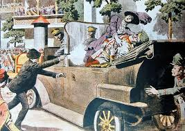

Línea de tiempo de la Primera Guerra Mundial
1914
El asesinato del archiduque Francisco Fernando desata la guerra.
1916
Las batallas de Verdún y Somme marcan el punto álgido del conflicto.

1918
El Tratado de Versalles pone fin a la guerra y redibuja Europa.

Figuras clave de la Primera Guerra Mundial
Woodrow Wilson
Presidente de EE.UU. y promotor de la Liga de Naciones.
Ferdinand Foch
Comandante supremo de las fuerzas aliadas.
Kaiser Wilhelm II
Emperador de Alemania durante la guerra.